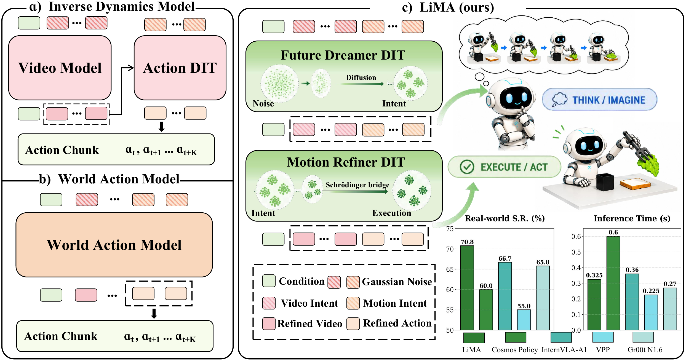
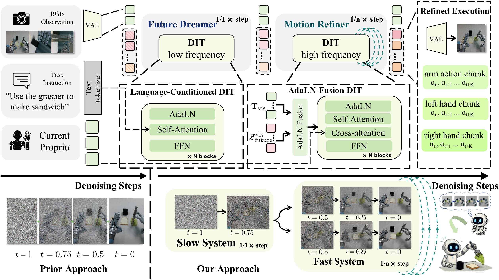
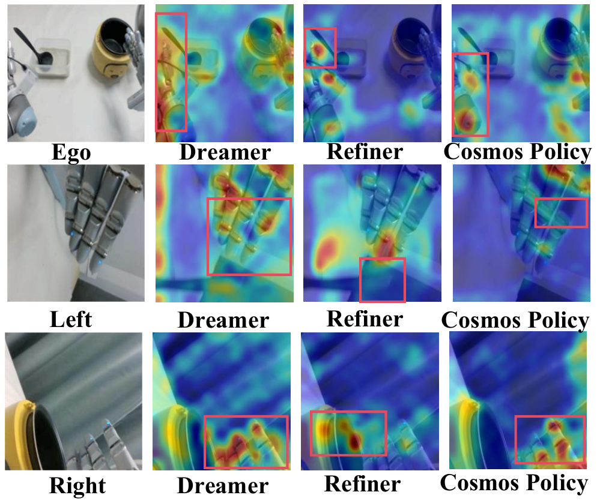
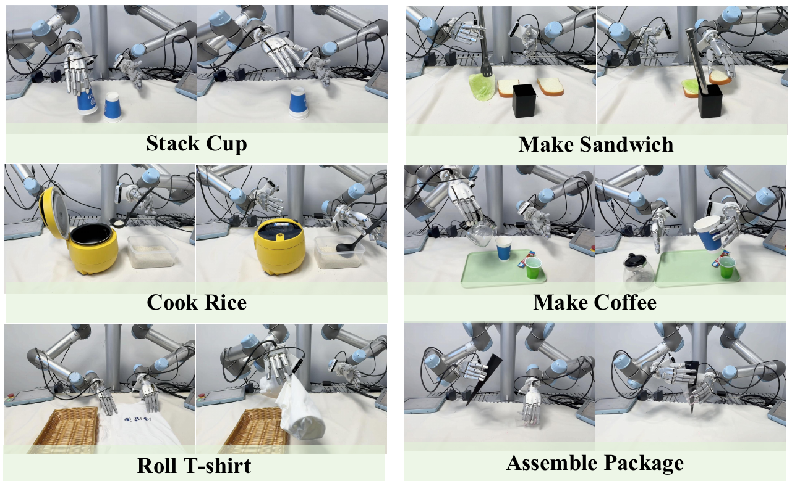
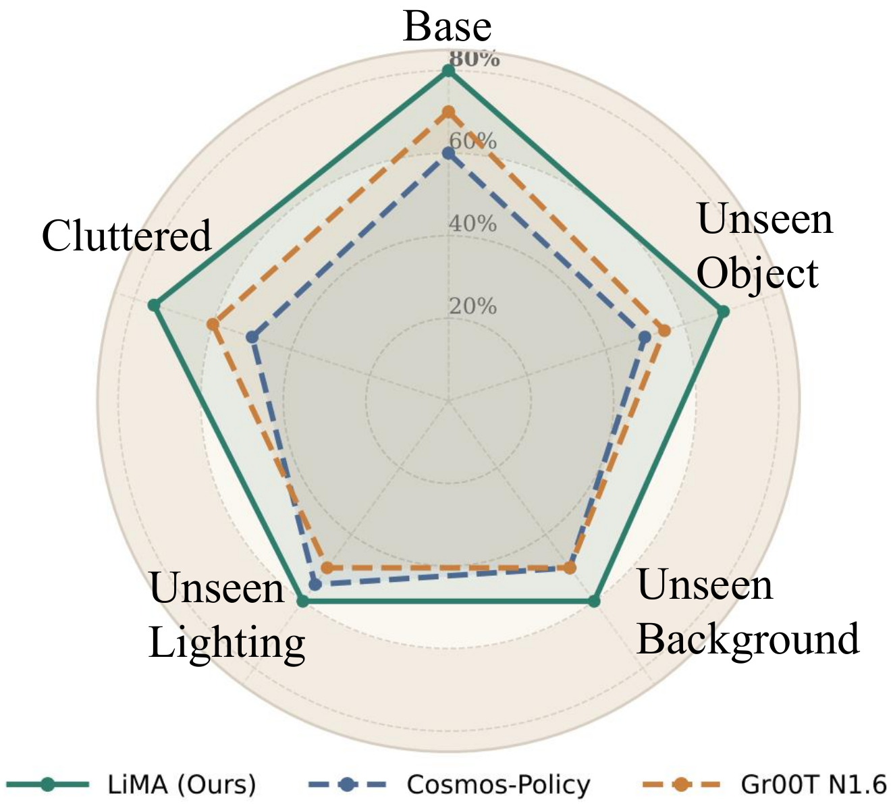

: Bridging Long-term Imagination to Real-time Dexterous Manipulation via Asynchronous Diffusion
1 State Key Laboratory of Multimedia Information Processing, School of Computer Science, Peking University
2 Beijing Academy of Artificial Intelligence
CoRL 2026
Abstract

Dexterous manipulation demands long-term foresight and rapid reactive control. Vision-Language-Action (VLA) models, while proficient in high-level reasoning, often lack a fine-grained understanding of physical dynamics and spatial perception. Conversely, World-Action Models (WAMs) typically suffer from high inference latency due to iterative generation. These deficiencies result in a critical temporal misalignment where the model's intent fails to adapt to rapid physical contact changes. To overcome this fundamental bottleneck, we propose LiMA, an asynchronous dual-system generative framework that systematically decouples intent planning from reactive execution. LiMA organizes computation into a multi-scale hierarchy: a slow system handles sparse long-horizon spatiotemporal intent generation, while a fast system focuses on dense high-frequency motion refinement. To align sparse intent predictions with dense action trajectories, we introduce a Latent Schrödinger Bridge Coupling mechanism that formulates refinement as an entropy-regularized probabilistic transport process. LiMA reduces inference latency by 45.8% compared with Cosmos-Policy via asynchronous decoupling. Evaluated across six bimanual dexterous manipulation tasks spanning multiple horizons, LiMA achieves an overall success rate of 70.8% and an average subtask success rate of 78.5%, while maintaining performance in unseen scenarios.
Method

-
Asynchronous Dual System
The Future Dreamer periodically refreshes long-horizon visual and action intent, while the Motion Refiner updates fine-grained actions from the latest observations.
-
Latent Schrödinger Bridge
A stochastic bridge uses the Dreamer's structured intent as a prior for action and visual refinement, instead of starting from unconditioned Gaussian noise.
-
Spatiotemporal Adaptive Modulation
View-aligned modulation fuses imagined future visuals with live camera features, while the current robot state grounds each local motion correction.
Experiments


Real-World Manipulation
1 / 6
| Method | Stack Cup | Roll T-shirt | Cook Rice | Make Sandwich | Make Coffee | Assemble Package | Latency | ||||||
|---|---|---|---|---|---|---|---|---|---|---|---|---|---|
| SR | PSR | SR | PSR | SR | PSR | SR | PSR | SR | PSR | SR | PSR | ||
| GR00T N1.6 | 85.0 | 87.5 | 70.0 | 71.7 | 70.0 | 72.0 | 65.0 | 72.5 | 55.0 | 71.7 | 50.0 | 61.7 | 270 ms |
| VPP | 80.0 | 80.0 | 55.0 | 56.7 | 55.0 | 60.0 | 50.0 | 61.3 | 50.0 | 56.7 | 40.0 | 48.3 | 225 ms |
| InternVLA-A1 | 90.0 | 90.0 | 75.0 | 88.3 | 70.0 | 78.0 | 65.0 | 77.5 | 50.0 | 66.7 | 50.0 | 58.3 | 360 ms |
| Cosmos-Policy | 80.0 | 82.5 | 60.0 | 70.0 | 60.0 | 67.0 | 60.0 | 71.3 | 55.0 | 63.3 | 45.0 | 51.7 | 600 ms |
| LiMA (Ours) | 90.0 | 95.0 | 75.0 | 83.3 | 80.0 | 82.0 | 70.0 | 80.0 | 60.0 | 70.0 | 50.0 | 63.3 | 325 ms |
SR and PSR are reported in %. Inference latency is measured on an NVIDIA H100 GPU.
Generation
1 / 4
